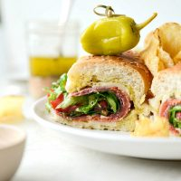

Restaurant Style Italian Subs
Home

Description
These classic Italian subs are loaded with layers of savory deli meats, provolone cheese, crisp lettuce, juicy tomatoes, onions, and tangy pepperoncini, all tucked into a fresh sub roll. Finished with a drizzle of olive oil, red wine vinegar, and Italian seasoning, they're a quick, flavorful sandwich that's perfect for lunch, dinner, or picnics.
Ingredients
- 1 Head Red Leaf Lettuce, Rinsed and Torn
- 2 Medium Fresh Tomatoes, Chopped
- 1 Medium Red Onion, Chopped
- 6 Tablespoons Olive Oil
- 2 Tablespoons White Wine Vinegar
- 2 Tablespoons Chopped Fresh Parsley
- 2 Cloves Garlic, Chopped
- 1 Teaspoon Dried Basil
- 1/4 Teaspoon Red Pepper Flakes
- 1 Pinch Dried Oregano
- 1/2 Pound Sliced Capacola Sausage
- 1/2 Pound Thinly Sliced Genoa Salami
- 1/4 Pound Thinly Sliced Prosciutto
- 1/2 Pound Sliced Provolone Cheese
- 4 Submarine Rolls, Split
- 1 Cup Dill Picle Slices
Directions
- Combine lettuce, tomatoes, and onion in a large bowl.
- Whisk together olive oil, vinegar, parsley, garlic, basil, red pepper flakes, and oregano in a medium bowl until well combined. Pour over salad and toss to coat evenly. Place in the refrigerator for flavors to meld, about 1 hour.
- Spread submarine rolls open, then layer capicola, salami, and prosciutto evenly on each roll. Top with provolone cheese. Cover with salad and pickle slices. Close rolls to serve.